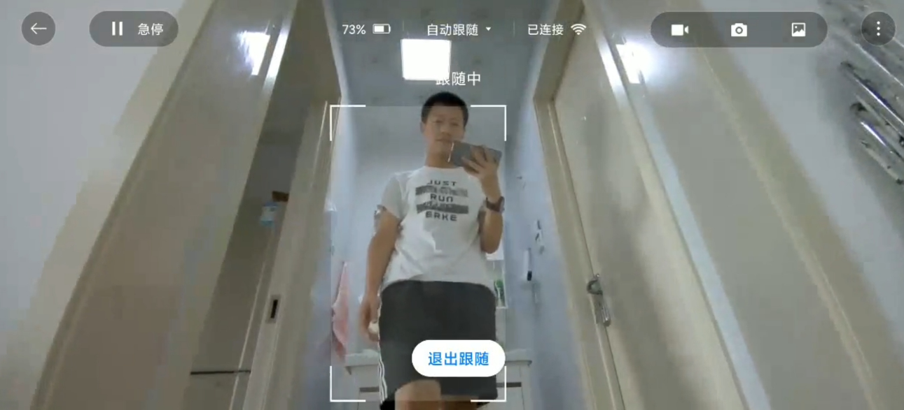

很久没有写小作文了（长文预警），由于铁蛋测评的DDL马上就要到了，而我又实在不想把这件事拖到中秋节以后，就趁此机会，快速下笔一番。倒不是说草草了事，只是拖延症严重的我再不逼自己一下怕是会不了了之。
首先，还是很感谢雷布斯给了这个机会，能够在1/50的概率下在我的报名申请上多停留了两眼，让我能有机会成为首批铁蛋的主人之一。报名的时候其实没有想很多，也不是没有想过万一自己通过申请，但是2W多人报名的情况下，400台铁蛋真的是僧多粥少。还记得收到官方客服电话的那天，心里也是一阵激动。虽然大家也有说付费众测也没有必要这么开心，但是于我个人而言意义还是有所不同（毕竟，很小很小的时候，我的梦想还是开一家玩具店卖我自己做的玩具，哈哈哈，<大笑脸>）。
那么，废话就讲到这里。正片儿开始~。
分三个大部分进行分享，首先仍然是一个简单的太长不看版，帮助各位客官快速get一些有用的信息以及我自己的评价；之后是对一些基本属性的测评包括外设、APP，基本功能等；最后是我自己的一点点胡思乱想的脑洞。此外，拍照技术一般的我就只能靠文字凑数了，欢迎大家吐槽（但是不要骂人，hhhhhh）。
0 太长不看版
- 铁蛋外形：★★★★★
- 硬件外设：★★★★★
- 运动控制：★★★
- 语音功能：★★
- 续航： ★
- 娱乐属性：★
- APP： ★★
- 室内建图：★★
- 目标跟踪：★★
- 开发拓展：★★★★★
目前的铁蛋作为工程探索版，在外观设计、硬件性能以及未来开发扩展等几个方面当真是没话讲，非常的赛博朋克，科技感满满、处理器、内存、硬盘、传感器、电机等外设硬件给人的感觉也是诚意十足（一只狗上来Xavier NX + 128G的固态还要啥自行车）。运动控制上有些差强人意，语音功能基本上照搬小爱同学换了一下唤醒词，在续航上....一言难尽。
因此，不建议非开发人员在当前阶段入手，用于娱乐基本不太可行。
目前的控制手段只有APP一种，APP目前相对粗糙，内置的了一些基本动作，以及一些简单的属性设置。带有的几个亮点是室内建图和跟随功能，但仍然处于较为初级的阶段。
1 属性测评
1.1 外观与APP
- 铁蛋外形：★★★★★
上面也有提到，作为工程探索版，在外观模具这方面，铁蛋当真没话讲，黑灰色金属外壳充满了科技感。入手较重，被装在行李箱里，然后我亲眼看着快递小哥扛着上了楼（这里感谢一波，辛苦啦~）。
喜提铁蛋一只，去皮净重约14公斤（约合七张毛爷爷一公斤.....hahaha，钱包在沉默...小强要吃土....）。
因为网上已经有很多铁蛋的精美写真...但是为了写测评，又要凑够十几张图，只能伤害一下各位的眼睛了。
丑图镇楼，充电状态下的铁蛋看着还是有点...傻。在关机和充电状态下，铁蛋基本只能处于这种“趴睡”的状态，因此也绝了我把它当做日常摆件的念头。铁蛋净重14公斤，对于一个机器人而言，这个重量绝不算重，刚好相当于一只中型犬的重量，各方面外形的设计也十分到位，只是在续航方面表现十分差劲，想来也是出于重量和体积的考虑选的电池，在运动状态下铁蛋只能坚持半小时左右，保持站立状态下掉电也十分可观。很好的体现了“充电一小时，撸狗十分钟”....。
对于这样一个“工程探索版”来说，这样的设计是没有问题的，也是十分吸引男孩子的。但是如果将来的产品定位是家居机器人的话，在外形设计上还上要考虑一下。值得一提的是，当我同事带着他家小姑娘过来玩儿的时候，小朋友看到铁蛋动起来的时候竟然差点儿被吓哭。这是一件值得反思的事情。
1.1.1基本外设
- 硬件外设：★★★★★
这里借用一张群里的图（侵删..），可以看到，“铁蛋虽小，五脏俱全”。处理器十分强大，是一款工业级嵌入式AI处理器 XAVIER NX，算力达 21 TOPS，什么概念呢？NVIDIA之前出过一款嵌入式的处理器TX2，有被用在自动驾驶汽车上，算力好像不到2 TOPS? 据说TX2已经足以用于做原子弹？而小米把它装在一只小狗上，哈哈哈哈，不得不说，真是....羡慕。
此外，运动控制板用的是MR813，12个自研高性能电机，电池管理 BMS 与 电机控制用的是STM32（看到这个词真的很亲切）。14公斤的铁蛋上装载了12组传感器帮助它认识世界，下图已足够详细，相机作为眼睛感知外部环境，TOF 和超声波应该都是用于测距的，铁蛋那句“你离我太近了”大概就是靠它们实现的。GPS模组，地磁传感器，IMU这些就不再多讲，看到就知道是干啥的。环境光传感器目前没有注意到，触摸传感器反应有点慢，不够灵敏。6 麦克风阵列名字确实很唬人，但是从几个玩家的拆机来看，感觉上有点小，然后被包在外壳中，做音源定位可能不大容易，不确定这个阵列的设计是否有考虑。
总得来说，一套下来成本真的在发烧（当然也可能我比较傻，，，好糊弄一点），雷布斯这波和开发者做朋友不知道得花多少钱。（当然，还是相信，羊毛出在羊身上....哈哈哈）。
打开铁蛋，远程搞了一下，简单的看了下性能，搭载lubuntu轻量级桌面 18.04的系统，使用开源的ROS2框架。目前看上去，一切都很和谐。
1.2.1 APP
- APP：★★
目前操控铁蛋的方式除了几个有限的语音命令外只能通过手机APP进行控制。但是，与外观相比，整个APP的设计就略显中规中矩了。就是一个基本的遥控界面，包含一些模式选择和设置等等。值得一提的是，每次打开都需要重新选择连接蓝牙与WIFI。一看就是被leader push 赶工出来的。
1.2 功能系统
1.2.1 语音功能
- 语音功能：★★
上面也有提到，语音功能这块基本上照搬小爱同学。因此，请雷布斯将这两颗星送给小爱同学团队（大笑）。原本小爱同学不止两颗星的，但是移植到铁蛋之后，这个声音给的着实有些粗犷。以及存在的一些bug，使得语音功能这里我只能给出两颗星的评价。
- 在对话上，铁蛋的语音无法被打断（我当前的版本），一旦铁蛋识别到一个名词并开始播报百科时，就会#@！#￥￥@讲个不停。
- 充满电时，铁蛋会开始重复“开始充电”，“充满了”两句，有时候会随机重复。
- 铁蛋有时候语音播报的情况下会说出小爱。
语音这部分明显可以看出有些粗糙。但是也可以理解，据说小米的机器人团队10个月从0搞到现在的水平？如果是的话，请给程序员小哥哥加鸡腿儿。如果是小姐姐的话，请加两只。
支持的有限的几个铁蛋控制命令：
1.2.2 运动控制
- 运动控制：★★★
铁蛋的运动系统在硬件上还是很有“天赋”（毕竟12个电机撑在那里），但是在实际表现上有些“差强人意”，具体说来，与波士顿动力的Big Dog还有较大差距。但是因为是在开源代码基础上修改的，这里也没有很多需要吐槽的地方。一些常规问题列在这里：
- 当“地面”更换，比如变成地毯或者塑料制品的垫子，铁蛋起身或做动作有时会打滑而变形
- 当铁蛋负载较大，控制性能变差
- 在我的垫子上，作揖和握手两个动作有时候做不出来
- 动作有些“草率”，感觉上不够平滑
- 电机发热
目前铁蛋支持的几个动作：
1.2.3 视觉功能
- 检测跟踪：★★
因为利益相关（刚好有一点点了解），在视觉这里就好好说两句。
图传真的很慢，从手机里看视频基本卡成PPT，非常影响体验，不确定是网络带宽的问题还是其他方面的硬件限制，如果图传只能保持这么低的帧率，一些远程的功能实际上都只能停留在理论层面，比如安防，监控，送快递等等？
检测略显差劲，这里其实不大理解，因为处理器相对较好，理论上讲目前很多实时且优秀的目标检测方法都可以上，不确定目前用的什么行人检测方法，bounding box跳动有些厉害，不稳定。行人目标常常会丢，当人蹲下时（能看到一半的身体）会检测不到。
在目标跟踪上，猜测应该使用的是 re-id 的策略做的跟踪，因为人在消失几秒之后重新出现，仍然可以跟踪上这个目标，因此不大可能是运动估计实现的tracking。tracking受到检测性能和铁蛋运动能力的限制，一旦目标出现较大的动作或者快速移动，铁蛋会来不及反应而跟丢目标。当铁蛋丢失目标后，会语音播报表示丢失，并且原地转圈寻找目标。
由于当前是工程探索版，这里暂时就不再猜测铁蛋目前使用的算法，只能说仍然有较大的改进空间。在跟随功能这里，虽然作为一个噱头可能是一个吸引玩家的点，但是实际应用上限制很大，做demo和玩耍可能可以，但是千万不要在室外太相信这个功能（小心你的铁蛋被人带跑啦！）。
铁蛋眼中的我：
1.2.4 室内建图
- 室内建图：★★
盲猜一波，建图部分应该用的是ROS自带的 gmapping 算法？虽然这个功能看上去和小米扫地机器人的建图差不多，但是在实际体验上，建图还上相对糟糕。可能是受限于铁蛋的四足运动方式较难实现准确的运动估计，以及说铁蛋没有激光雷达的原因，建图表现上与扫地机器人相差甚远。
这里也许是工程师们需要重点下手的地方，因为续航与重量的原因，铁蛋在室外的空间极其有限，更多的应用场景应该是室内，而地图与定位更是重要的环节。由于我个人对这一方面也是知之甚少，就不过多絮叨。
下面是一张建图的结果（哈哈哈，活生生的把我的一居室建出了小三居的感觉）:
2 未来开发设计
2.1 当前软件系统与架构
铁蛋的整个系统是基于ROS2搭建的，ROS 设计之初就说为机器人系统提供一个可复用的框架和平台，而其节点的设计形式，为机器人工程师的开发和团队合作提供了极大的便利。代码和框架就在这里，赶快开始搞事情吧~。
2.2 再加一点点细节
写到这里已经是晚上11点，我也没有想到会写这么久，哈哈哈哈，看在我这么努力的份儿上，请999的大礼包考虑一下我，略略略~。
正经点，这里是要写一下未来的一些想法的。
当我想到这里，我不禁开始思考，未来是什么样子的呢？AI时代真的已经到来了吗？智能机器人会成为人们日常生活中的重要的一部分吗? 你眼中的机器人应该是什么样子?什么身份?什么角色? 可是在当前阶段,技术水平好像又没有达到很高的程度，一切在外行看来“智能”的行为，在我们看来都是那么的符合预期与平淡。这对开发者来说很难讲是一种特权还是不幸？
还记得面试的时候，PPT上介绍自己的那一页，我是这么介绍自己的：
- 一个极客技术爱好者
- 一个砥砺前行的Cver
- 一个自动驾驶开发者
自己平常也是一个喜欢胡思乱想的人，生活虽然平淡，但是仍然希望技术可以带来一些不一样的改变。虽然目前还有许多知识需要学习，还有很多技术需要提高，但是，人总是会成长的对吗。当小强碰到了铁蛋，又会碰撞出哪些火花呢？
在本科的时候，和几个要好的团队伙伴儿一起，我们也参加比赛，也都喜欢机器人，我们也像模像样的做了一个小小的手机机器人，我们把它叫做Doer 手机机器人 ，还记得，当时说，希望我们每一个人都能成为不折不扣的执行者。当时的几个人也是在实实在在的做着一些有趣的事情，实现着一些“幼稚”的想法。现在想来有时也会不禁一笑，就像在看小朋友玩泥巴，有时候也会想再去试一试。在这个机器人上当初我们也有一些天马行空的想法，但受限于当初的眼界、硬件和技术水平，有一些东西尚不完善和幼稚。趁此机会，基于铁蛋，就再次将一些不成熟的想法记录下来。
首先，我个人对于铁蛋的定位，应该是一个家居服务型机器人。主要扩展的几个方面：
- 娱乐：
- 互动小游戏
- 机器人在真实的游戏互动这方面应该有更大的发展空间，类似于一些猜谜语，大冒险，以及结合上AR或者VR技术，或许可以做出更加特别的表现形式
- 互动小游戏
- 遥控
- 手机 pad 手势
- 脑机接口，意识头盔等
- 教育：
- 可视化编程游戏
- 语音百科
- 教学监督？
- 安防：
- 异常监控
- 场景理解
- 家居服务：
- 配合小米智能家居，控制家电
- 其他基础功能
- 语音，避障，识别，建图，导航等等
- 在户外请铁蛋帮忙导航？
- 对于我这样的路痴来说感觉也是不错的一个点
- 在户外请铁蛋帮忙导航？
- 语音，避障，识别，建图，导航等等
从技术实现上讲，还有很多的难点：
诸如，如何提高语音互动功能的效果？而不是说仍然只是简单的调用一下云端的语音API，获取一下网上搜索的关键字再读出来这种形式？当前流行的人工智能领域类似长短时记忆网络等能否在语音互动的上下文理解方面提供一点帮助，仍然有待探索。
诸如，在手势识别以及场景理解方面，目前了解到的大多仍然是类似使用3D卷积对视频流和意图进行分类的形式，这些技术，也许同样可以应用。
此外，对于机器人来讲，如何能够实现合理的但是又不为人所定义的智能决策呢，也许也是可以进一步挖掘和考虑的。
附一张和同学聊天后的胡写乱画;
写到这里也就差不多结束，小作文写的有点长，上述种种，都是一些脑洞大开和胡思乱想，请诸位切莫当真，哈哈哈哈。大晚上的确实容易多愁善感，也会想到如果老爸看到他儿子洋洋洒洒写的小作文，会不会也有一点开心和自豪。

永远相信，美好的事情即将发生。
最后的最后，向当年的小团队和热血青春致敬。
向AI技术的未来致敬。
向自动驾驶致敬。
对了，还有，祝Mentor生日快乐~。